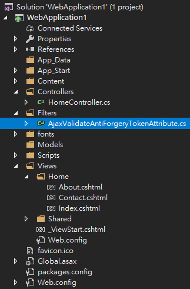

Ajax 搭配 AntiForgeryToken
一、
為了防範 Cross-site request forgery 問題(簡稱 CSRF or XSRF)，
ASP.NET MVC 已經提供了 AntiForgeryToken、ValidateAntiForgeryToken 可用，範例如下
HomeController.cs
using System.Web.Mvc;
namespace WebApplication1.Controllers
{
public class HomeController : Controller
{
private static string _userId = "";
public ActionResult Index()
{
return View();
}
[ValidateAntiForgeryToken]
[HttpPost]
public ActionResult Index(string userId)
{
_userId = userId;
return View();
}
public ActionResult About()
{
ViewBag.Message = "Your application description page.";
return View();
}
public ActionResult Contact()
{
ViewBag.UserId = _userId;
return View();
}
}
}
Index.cshtml
@using (Html.BeginForm("Index", "Home", null, FormMethod.Post))
{
@Html.AntiForgeryToken()
<label>請輸入你的名字</label>
<input type="text" name="userId" value="" />
<input type="submit" value="送出" />
}
當 submit 時，request header 就會夾帶 __RequestVerificationToken，
並將之一併傳送到後端做驗證。
Contact.cshtml
<p>你輸入的名字為 @ViewBag.UserId</p>
二、
至於採用 Ajax 技術方面也有方法可處理 CSRF，範例如下
檔案結構為

HomeController.cs 為
using System.Web.Mvc;
using WebApplication1.Filters;
namespace WebApplication1.Controllers
{
public class HomeController : Controller
{
private static string _userId = "";
public ActionResult Index()
{
return View();
}
[AjaxValidateAntiForgeryToken]
[HttpPost]
public ActionResult Index(string userId)
{
_userId = userId;
return View();
}
public ActionResult About()
{
ViewBag.Message = "Your application description page.";
return View();
}
public ActionResult Contact()
{
ViewBag.UserId = _userId;
return View();
}
}
}
AjaxValidateAntiForgeryTokenAttribute.cs 為
using System;
using System.Web;
using System.Web.Helpers;
using System.Web.Mvc;
namespace WebApplication1.Filters
{
public class AjaxValidateAntiForgeryTokenAttribute : FilterAttribute, IAuthorizationFilter
{
public void OnAuthorization(AuthorizationContext filterContext)
{
try
{
if (filterContext.HttpContext.Request.IsAjaxRequest())
{
ValidateRequestHeader(filterContext.HttpContext.Request);
}
else
{
filterContext.HttpContext.Response.StatusCode = 404;
filterContext.Result = new HttpNotFoundResult();
}
}
catch (HttpAntiForgeryException e)
{
throw new HttpAntiForgeryException("Anti forgery token cookie not found");
}
}
private void ValidateRequestHeader(HttpRequestBase request)
{
String cookieToken = String.Empty;
String formToken = String.Empty;
String TokenValue = request.Headers["RequestVerificationToken"];
if (!String.IsNullOrWhiteSpace(TokenValue))
{
String[] Tokens = TokenValue.Split(new string[] { "@.@" }, StringSplitOptions.RemoveEmptyEntries);
if (Tokens.Length == 2)
{
cookieToken = Tokens[0];
formToken = Tokens[1];
}
AntiForgery.Validate(cookieToken, formToken);
}
}
}
}
有人會將非 Ajax Request 使其走 ValidateAntiForgeryToken，
而 Ajax Request 使其走自訂的 AjaxValidateAntiForgeryToken，
我覺得可以看情形，不一定就要跟他人一樣一率拆開，
合在一起或拆開，先看情形，在用最適合的方式。
index.cshtml 為
<label>請輸入你的名字</label>
<input type="text" id="userId" name="userId" value="" />
<button id="mybutton">送出</button>
@functions{
public static string GetAntiForgery()
{
string cookieToken, formToken;
AntiForgery.GetTokens(null, out cookieToken, out formToken);
return String.Concat(cookieToken, "@.@", formToken);
}
}
@section scripts{
<script>
document.getElementById("mybutton").addEventListener("click", loadDoc);
function loadDoc() {
var userId = document.getElementById("userId").value;
var xhttp = new XMLHttpRequest();//宣告XMLHttpRequest物件
xhttp.onreadystatechange = function () {//如果readyState有被改變時
if (this.readyState == 4 && this.status == 200) {
//從後端回應的responseText內容放至result裡面
//document.getElementById("result").innerHTML = this.responseText;
}
};
xhttp.open("POST", "@Url.Action("Index")", true);
xhttp.setRequestHeader("X-Requested-With", "XMLHttpRequest");
xhttp.setRequestHeader("Content-type", "application/x-www-form-urlencoded");
xhttp.setRequestHeader("RequestVerificationToken", "@GetAntiForgery()");
xhttp.send("userId=" + userId);
}
</script>
}
Contact.cshtml 為
<p>你輸入的名字為 @ViewBag.UserId</p>
參考資料：
Prevent Cross-Site Request Forgery (XSRF/CSRF) attacks in ASP.NET Core